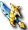

一般｜異常狀態防禦｜99魔王區獎勵道具｜天上－善屬性｜天上－惡屬性
迪姆萊特系｜雷歐加爾特｜斯科爾菲吉
名稱為橘色的是可以附魔的物品。另外，未鑑定名稱是該道具在未鑑定狀態下的名稱。
提供情報或編輯請求，請到情報提供公佈欄、編輯公佈欄。
迪姆萊特系
| 名稱 | 價格 | 限制 | 職業 | Wei | 取得方式 |
 忘卻的幽光匕首 忘卻的幽光匕首 | 32,500 | Lv100,FLv71TLv41,BLv41 | 戰修盜騎阿聖魔預吟 | 11 |  暗影威爾利克、 暗影威爾利克、 死亡守衛 死亡守衛 |
| 能力 | 攻51～59 DAM+14 HIT+12 HP+120 SP+70STR+2 CON+2 DEX+4 +OP |
| 備註 | 中毒防禦(PCount:100)以微微發光的魔石加工製成的匕首。死亡時消失 |
| 名稱 | 價格 | 限制 | 職業 | Wei | 取得方式 |
| 幽光匕首 | 195,500 | Lv100,FLv71TLv41,BLv41 | 戰修盜騎阿聖魔預吟 | 11 | 死亡守衛、迪奧特、菲利爾大師(塞佩利歐斯帕提姆)、提爾歐4 |
| 能力 | 攻51～59 DAM+14 HIT+12 HP+120 SP+70STR+2 CON+2 DEX+4 +OP |
| 備註 | 中毒防禦(PCount:100)以微微發光的魔石加工製成的匕首。以魔石之力強化後，可以升級為魯尼克套裝道具。 |
| 名稱 | 價格 | 限制 | 職業 | Wei | 取得方式 |
 魯尼克匕首 魯尼克匕首 | 207,000 | Lv105,FLv81TLv51,BLv51 | 戰修盜騎阿聖魔預吟 | 12 | 武器升級、迪奧特(塞佩利歐斯帕提姆) |
| 能力 | 攻92～110 DAM+15 HIT+14 HP+150 SP+100STR+4 CON+3 DEX+8 |
| 備註 | 中毒防禦(PCount:150)藉由魔石之力增加了光輝與殘虐性的匕首，利用其形狀，擁有連厚重鎧甲都能貫穿的威力。不可染色 |
| 名稱 | 價格 | 限制 | 職業 | Wei | 取得方式 |
| 迪卡魯尼克匕首 | - | Lv110,FLv91VLv61,BLv61 | 戰修盜騎阿聖魔預吟 | 14 | 武器升級 |
| 能力 | 攻113～134 DAM+17 HIT+15 HP+200 SP+120STR+8 CON+6 DEX+11 |
| 備註 | 中毒防禦(PCount:200) |
雷歐加爾特的靈魂
| 名稱 | 價格 | 限制 | 職業 | Wei | 取得方式 |
 忘卻的雷歐加爾特匕首 | 76,300 | Lv105,FLv71TLv21,BLv21 | 戰修盜騎阿聖魔預吟 | 13 | |
| 能力 | 攻223～226 DAM+11 HIT+14 HP+184 MP+31 SP+126STR+1 CON+1 DEX+4 Critical3% +OP |
| 備註 | 融入雷歐加爾特之力的匕首。死亡時消失。交換/使用時專屬 |
| 名稱 | 價格 | 限制 | 職業 | Wei | 取得方式 |
| 被封印的雷歐加爾特匕首 | 229,000 | Lv105,FLv71TLv21,BLv21 | 戰修盜騎阿聖魔預吟 | 13 |  哥布林（狂戰士） 哥布林（狂戰士） |
| 能力 | 攻47～59 DAM+14 HIT+13 HP+110 SP+70STR+1 CON+1 DEX+4 +OP |
| 備註 | 混亂防禦(PCount:143)封印著雷歐加爾特之力的匕首。交換/使用時專屬 |
| 名稱 | 價格 | 限制 | 職業 | Wei | 取得方式 |
| 雷歐加爾特匕首 | 763,000 | Lv105,FLv71TLv21,BLv21 | 戰修盜騎阿聖魔預吟 | 13 | 武器升級 |
| 能力 | 攻203～206 DAM+11% HIT+14% HP+176 MP+30 SP+120STR+1 CON+1 DEX+4 Critical3% |
| 備註 | 融入雷歐加爾特之力的匕首。使持有者寄宿雷歐加爾特之力。交換/使用時專屬 |
| 名稱 | 價格 | 限制 | 職業 | Wei | 取得方式 |
| （真）雷歐加爾特匕首 | 763,000 | Lv105,FLv71TLv21,BLv21 | 戰修盜騎阿聖魔預吟 | 13 | 武器升級 |
| 能力 | 攻223～226 DAM+13% HIT+16% HP+192 MP+30 SP+160STR+3 CON+2 DEX+6 Critical7% |
| 備註 | 融入雷歐加爾特之力的匕首。能將武器上寄宿的雷歐加爾特之力發揮到極限。交換/使用時專屬 |
斯科爾菲吉的靈魂
| 名稱 | 價格 | 限制 | 職業 | Wei | 取得方式 |
 忘卻的斯科爾菲吉匕首 忘卻的斯科爾菲吉匕首 | 76,300 | Lv105,FLv71TLv21,BLv21 | 戰修盜騎阿聖魔預吟 | 13 | 哥布林（監工） |
| 能力 | 攻212～227 DAM+10 HIT+13 HP+277 MP+31 SP+105STR+1 CON+1 DEX+4 +OP |
| 備註 | 融入斯科爾菲吉之力的匕首。死亡時消失。交換/使用時專屬 |
| 名稱 | 價格 | 限制 | 職業 | Wei | 取得方式 |
| 被封印的斯科爾菲吉匕首 | 229,000 | Lv105,FLv71TLv21,BLv21 | 戰修盜騎阿聖魔預吟 | 13 | 哥布林（劇毒師）、 涅特雷姆 涅特雷姆 |
| 能力 | 攻49～58 DAM+15 HIT+12 HP+130 SP+50STR+1 CON+1 DEX+3 +OP |
| 備註 | 中毒防禦(PCount:143)封印著斯科爾菲吉之力的匕首。交換/使用時專屬 |
| 名稱 | 價格 | 限制 | 職業 | Wei | 取得方式 |
| 斯科爾菲吉匕首 | 763,000 | Lv105,FLv71TLv21,BLv21 | 戰修盜騎阿聖魔預吟 | 13 | 武器升級 |
| 能力 | 攻193～207 DAM+10% HIT+13% HP+264 MP+30 SP+100STR+1 CON+1 DEX+4 Critical3% |
| 備註 | 融入斯科爾菲吉之力的匕首。使持有者寄宿斯科爾菲吉之力。交換/使用時專屬 |
| 名稱 | 價格 | 限制 | 職業 | Wei | 取得方式 |
| (真)斯科爾菲吉匕首 | 763,000 | Lv105,FLv71TLv21,BLv21 | 戰修盜騎阿聖魔預吟 | 13 | 武器升級 |
| 能力 | 攻196～214 DAM+11 HIT+14 HP+281 MP+30 SP+120STR+2 CON+4 DEX+5 Critical+5% |
| 備註 | 融入斯科爾菲吉之力的匕首。能將武器上寄宿的斯科爾菲吉之力發揮到極限。交換/使用時專屬 |